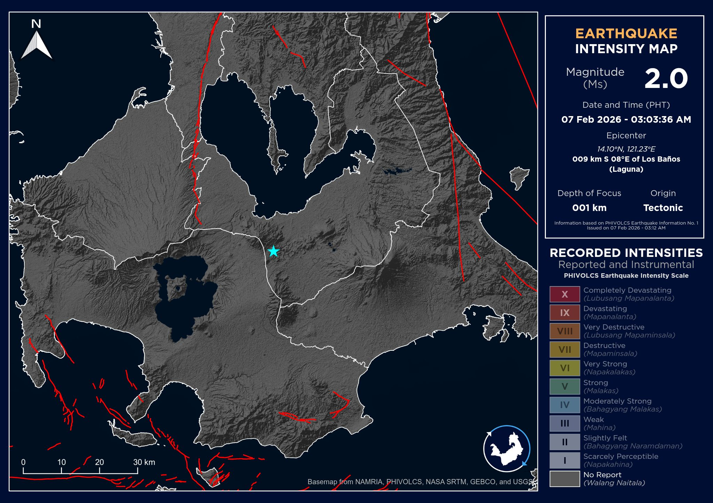

𝗘𝗔𝗥𝗧𝗛𝗤𝗨𝗔𝗞𝗘 𝗔𝗟𝗘𝗥𝗧
ICYMI: Isang magnitude 2.0 na lindol ang yumanig sa #LosBaños, Laguna nitong 3:03 AM ng Sabado, 07 February 2026. Ayon sa PHIVOLCS, tectonic ang pinagmulan ng lindol at may lalim na 1 km. Wala namang naitalang naramdamang intensity, at hindi inaasahang magdulot ng pinsala o aftershocks.
𝗘𝗮𝗿𝘁𝗵𝗾𝘂𝗮𝗸𝗲 𝗜𝗻𝗳𝗼𝗿𝗺𝗮𝘁𝗶𝗼𝗻 𝗡𝗼. 𝟭
As of 07 February 2026 – 03:12 AM
Date and Time: 07 February 2026 – 03:03 AM
Magnitude: 2.0
Depth of Focus: 001 km
Origin: Tectonic
Location: 14.10°N, 121.23°E – 009 km S 08° E of Los Baños (Laguna)
Reported Intensities: None
Expecting Damage: No
Expecting Aftershocks: No
Source: PHIVOLCS
#LagunaWISE #EarthquakeLaguna